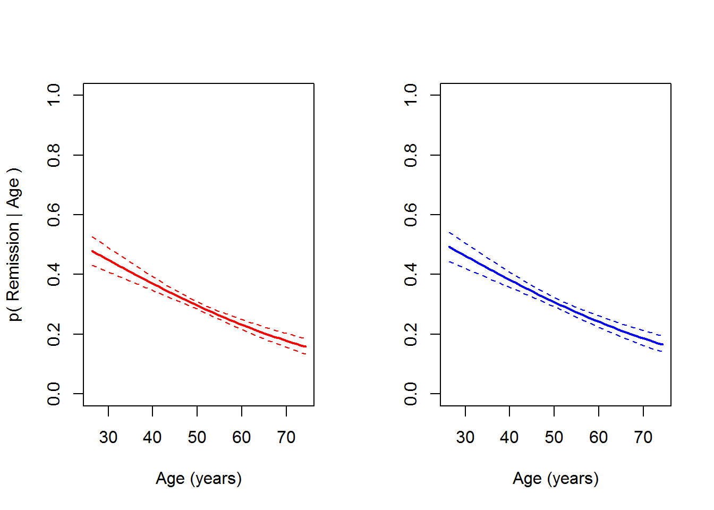

This week in lab, we will start to take a closer look at generalized linear models (GLM) through the lens of logisitic regression. This is an family that includes multiple types of analyses depending on the data. For example, we might have binary data (0, 1), binomial data (number of success per some number of trials), or multinomial data (group membership as a response). We will look at the simplest of these cases, binary logistic regression, this week.
For our exercise this week, we will work with a simulated data set about lung cancer patients made available through the UCLA Institute for Digital Research and Education. The response in this data set is remission, a 1/0 variable indicating whether or not a given patient went into remission following hospital treatment.
Start by reading in the data.
cancer = read.csv('http://employees.oneonta.edu/stichds/data/lungcancer.csv')This data set contains a pile of variables, which of course makes it very fun to work with. We will work with some, but not all, of these variable this week for lab, and then you will make some additional choices about which of them you will work with for your homework, using remission as our response of interest throughout. Explanations of variables are as follows:
tumorsize: the size of the tumor
co2: patient CO2 levels
pain: pain scale experienced by the patient
wound: a ranking variable used to indicate surgical wound
mobility: another ranking variable to rate patient mobility
ntumors: number of cancer tumors (integer)
nmorphine: number of morphine applications (integer)
remission: whether or not patients went into remission (1/0)
lungcapacity: percent of full lung capacity by patient
Age: patient age (continuous)
Married: whether or not the patient is married (1/0)
FamilyHx: whether or not there is a family history of cancer (1/0)
SmokingHx: patient smoking history (former, never, current)
Sex: male or female
CancerStage: severity of cancer by standard ranks (I-IV)
LengthofStay: how long patients were in the hospital
WBC: average white bloodcell count by patient
RBC: average red bloodcell count by patient
BMI: body mass index
IL6: interleukin 6 levels by patient
CRP: C-reactive protein levels by patient
DID: doctor ID
Experience: doctor experience level (years)
School: doctor school performance (categorical)
Lawsuts: number of lawsuits by doctor
HID: hospital ID
Medicaid: percent medicaid coverage by hospitalHoly moly, what fun!
Let’s start with a simple example to get you moving along. First, we will pretend that we are interested in determining the effects of Age and Sex on the probability of a patient going into remission following treatment. If you have been following closely during the past few weeks, you will recognize that with a categorical variable (Sex) and a continuous variable (Age) we are looking at something that should resemble an analysis of covariance. But, our response, remission, can only take on values of 0 and 1, so we know that we need to use a GLM to accommodate this.
To fit this model we will use the glm function in R, being sure to specify family = 'binomial' in our call:
# Fit the model
c.mod = glm(remission~Sex+Age, family='binomial', data=cancer)Cool, that was easy!
Let’s have a look at what the model tells us about our biological questions of interest now. Remember, we need to work with the Anova() function in the car package to use the correct sums of squares for these calculations because we have continuous and categorical variables.
# Load the car library so we can get a meaningful ANOVA table for our model
library(car)
# Print the summary of the model
Anova(c.mod, Type='III')## Analysis of Deviance Table (Type II tests)
##
## Response: remission
## LR Chisq Df Pr(>Chisq)
## Sex 1.257 1 0.2621
## Age 75.377 1 <2e-16 ***
## ---
## Signif. codes: 0 '***' 0.001 '**' 0.01 '*' 0.05 '.' 0.1 ' ' 1Question 1. Based on the output of our call to Anova(), what can you determine about the statistical significance of the effects of Sex and Age on the probability of patients going into remission?
Just as with all of our other models, we can use the summary() function to get the output from R.
# Print the summary of the model
summary(c.mod)##
## Call:
## glm(formula = remission ~ Sex + Age, family = "binomial", data = cancer)
##
## Deviance Residuals:
## Min 1Q Median 3Q Max
## -1.1654 -0.8581 -0.7878 1.4582 1.8985
##
## Coefficients:
## Estimate Std. Error z value Pr(>|z|)
## (Intercept) 0.788166 0.196091 4.019 5.83e-05 ***
## Sexmale 0.054484 0.048557 1.122 0.262
## Age -0.033089 0.003838 -8.621 < 2e-16 ***
## ---
## Signif. codes: 0 '***' 0.001 '**' 0.01 '*' 0.05 '.' 0.1 ' ' 1
##
## (Dispersion parameter for binomial family taken to be 1)
##
## Null deviance: 10353 on 8524 degrees of freedom
## Residual deviance: 10276 on 8522 degrees of freedom
## AIC: 10282
##
## Number of Fisher Scoring iterations: 4The summary of the model gives us the estimated coefficients on the logit scale, along with our usual significance codes and an AIC score (now in the default output because we are using maximum likelihood estimation).
Even though these parameters are on the logit scale, we can still make limited inference about the directionality of relationships as we would with linear models used earlier in the semester.
Question 2. What can you tell about the direction of the relationship between Age and remission from the output from summary() above?
One thing that you’ll notice is missing from this output is the R2 value that we have become familiar with during the past several weeks while working with linear models. There is no R2 value because we are no longer estimating these models using ordinary least squares, but rather maximum likelihood estimation. If we wanted to get an analagous metric of variance explained by our model, we could estimate a pseudo-R2. There are many of these available depending on the model and nature of our data. The simplest to calculate is the McFadden R2. To estimate this one, we compare the deviance of our model to the deviance of an intercept-only (i.e. “null”) model using the output from the summary function above:
\[McFadden R^2 = 1 - \frac{Deviance_{residual}}{Deviance_{null}}\]
Here, we can see that the model only explains about 1% of the variation in the response of interest:
\[R^2 = 1 - \frac{1.0275956\times 10^{4}}{1.0352637\times 10^{4}} = 0.0074\]
Now that we have a feel for just how miserable this model is, our first inclination might be to throw it all away and start over (joking). But, for the sake of demonstration let’s see it through. The next step in reporting our results here is to extract some information about how remission changes with Age beyond simply stating that it was either “inversely” or “proportionally” related to remission. We will include Sex in our predictions for the sake of demonstration, realizing that this effect was not determined to be significant.
Recall that we can make predictions from our model either by hand or by using the predict function in R. Note that if we use the predict function for glm objects in R, we no longer have the ability to set the interval argument as we did for objects resulting from the lm() function (well, we can- it will just be ignored). Therefore, if we want confidence intervals on our predictions, we will need to do it by hand (well, in the computer).
Start by making some new data that we can use for predictions.
# Start with Age by making a sequence from the minimum
# observed age to the maximum observed age in equal
# increments of 1 year
Age = seq(from=min(cancer$Age), to=max(cancer$Age), by=1)
# Now, make a column for each sex that is the same length
females = rep('female', length(Age))
males = rep('male', length(Age))
# Combine the information for both sexes into a vector with the same
# name as is used in the original data
Sex = c(females, males)
# Now, duplicate the age column so it is repeated
# for both sexes
Age = rep(Age, length(unique(Sex)))
# Put it all together in a dataframe
newD = data.frame(Sex, Age)Now that we have new data for making predictions, let’s go ahead and do it!
# Calculate mean predicted value and SE for the predictions
# on the link scale
preds = data.frame(
predict(c.mod, newD, type='link', se.fit = TRUE)[1:2]
)
# Now get lower and upper CIs
preds$lwr = preds$fit + preds$se.fit*qnorm(0.025)
preds$upr = preds$fit + preds$se.fit*qnorm(0.975)Now, we need to define a function to invert the logit
inv.logit = function(x){
exp(x)/(1+exp(x))
}We can convert our predictions to the probability scale. Here, we loop over columns 1, 3, and 4 of our preds dataframe using the apply function because the second column is just the standard errors for our predicted fit at each point. This gives us mean and 95% CI on the probability scale.
# Convert the predictions to the probability scale
preds[ , c(1,3,4)] = apply(X=preds[ , c(1,3,4)],
MARGIN=2,
FUN=inv.logit
)Finally, let’s plot our predictions. Note that we do not plot our raw data here because it is a huge number of ones and zeros that do not lend themselves to visual interpretation (I tried), but this is generally good practice.
# Plot the predictions
# Set graphical parameters
par(mfrow=c(1,2))
# Females
# Plot the mean predicted probability of remission
# given age across the range of observed ages
plot(y=preds$fit[newD$Sex=='female'],
x=newD$Age[newD$Sex=='female'],
col=c('red'),
type='l',
lty=1, lwd=2,
ylim=c(0, 1),
ylab = 'p( Remission | Age )',
xlab = 'Age (years)'
)
# Lower 95% CI
lines(preds$lwr[newD$Sex=='female'],
x=newD$Age[newD$Sex=='female'],
col='red', lty=2)
# Upper 95% CI
lines(preds$upr[newD$Sex=='female'],
x=newD$Age[newD$Sex=='female'],
col='red', lty=2)
# Males
# Plot the mean predicted probability of remission
# given age across the range of observed ages
plot(y=preds$fit[newD$Sex=='male'],
x=newD$Age[newD$Sex=='male'],
col=c('blue'),
type='l',
lty=1, lwd=2,
ylim=c(0, 1),
ylab = '',
xlab = 'Age (years)'
)
# Lower 95% CI
lines(preds$lwr[newD$Sex=='male'],
x=newD$Age[newD$Sex=='male'],
col='blue', lty=2)
# Upper 95% CI
lines(preds$upr[newD$Sex=='male'],
x=newD$Age[newD$Sex=='male'],
col='blue', lty=2) 
Using either the graph or the estimates in the fit column of preds, we can estimate about how much remission changes across the range of Age observed. We don’t need to report this by Sex because we know that was not significant in our model, and the change is about the same. So, here we can say that probability of entering remission decreased from about 49% to about 16% over the range of ages observed during this study.
Next, I want you to strike out on your own and make a couple of models. To start, please choose one categorical explanatory variable other than Sex and one continuous explanatory variable (this can be the same as the one included in the previous model or different). Do not use DID, Experience, School, or HID for this analysis.
Fit a model using your two variables, and save it to a named object.
Create a third model that represents the null model. If you have forgotten since last week how to specify this, remember that we can use the following notation to specify the null model:
null = glm(remission~1, family=binomial, data=cancer)Compare the null model to your previous model using AIC for model comparison.
Question 3. Do the differences in AIC scores indicate a substantial difference in the fit of the two models (i.e. is one much better than the other?). What can you conclude about your new model based on this?
Question 4. Use the Anova function from the car package to report on the statistical significance of the relationship between your chosen explanatory variables and remission.
Make predictions from your model using the same procedure that we used above to determined how much remission varied between Sex and by Age (but do it for your variables). Be sure to estimate separately for each group of your categorical explanatory variable if this was significant in your model.
Question 5. About how much does remission change across the range of observed values for your continuous covariate based on your model predictions?
Plot your model predictions for your continuous covariate like we did above, being sure to include estimates for each group of your explanatory variable if it was significant in your new model.
Copyright © 2017 Dan Stich. All rights reserved.